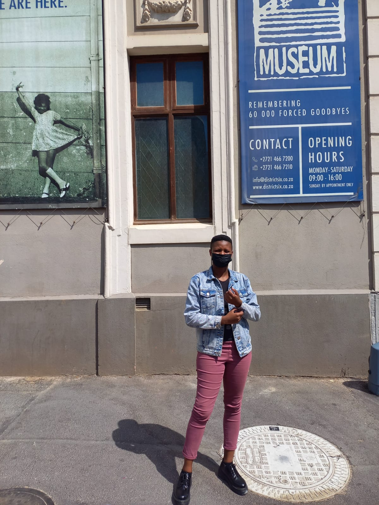
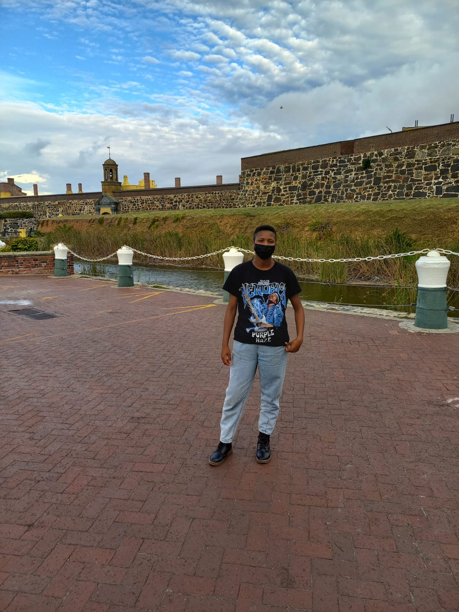
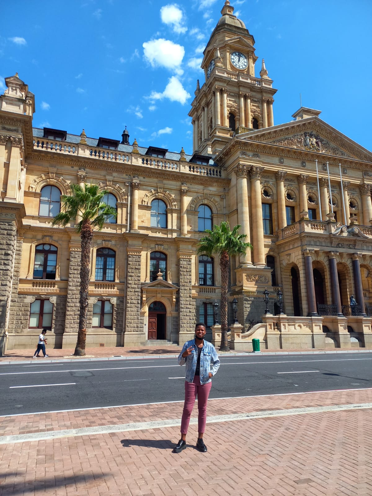

HISTORICAL PLACES
District Six Meseum

The District Six Museum Foundation was established in 1989.The museum was found in1994. Currently, the museum serves as a remembrance of the once lively multi-racial area that was forcefully removed during apartheid in the 1960s
`Castle Of Good Hope

The green market square was built in 1696,The square has served as a slave market, a vegetable market, a parking lot and more recently, a flea market trading mainly African souvenirs, crafts and curios.
Cape Town City Hall

The tower of the City Hall has a Turret Clock which strikes the hours and chimes the Westminster quarters. The faces of the clock are made from 4 skeleton iron dials filled with opal. The clock has a 24-hour wheel and lever.